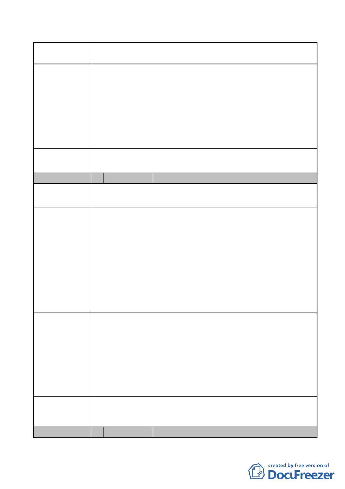

案名
委員會
決議
編號
變更臺北市內湖區石潭段四小段 280、281、281-1 地號等三筆
土地國中、國小用地為體育場用地及道路用地主要計畫案
球場將與住宅區保持 40 公尺以上距離，應可降低活動噪
音對周邊住宅區之影響。
(2) 松山機場距離本案基地水平距離約 5 公里，參考國外案
例，飛機起降並未影響比賽進行。
(3) 有關照明部分，未來將規範避免光源直接照射民宅，且無
向上投光之建築層立面或頂層照明廣告之照明設置。網球
場照明系統燈光將由球場兩側朝地面均勻照射，惟戶外球
場使用時間將於未來營運計畫時進行適宜之規範。
同編號 1 陳情意見委員會決議。
3 陳情人
麥朝成
陳情地點
陳情理由及建
議辦法
市府回應說明
有關貴會擬「變更台北市內湖區石潭段四小段 280、281、
281-1 地號等三筆土地國中、國小用地為體育場用地及道路用
地主要計畫案」乙事，茲建議如下：
1.在程序上貴會通過用地變更案，但環境影響評估結果未通過
時，本案當如何處理？
2.本案對民權東路六段 206 巷及 210 巷的附近居民噪音影響
最大，市政府未與這些影響最大的居民當面溝通，屆時若引
起民怨抗爭，後果恐不堪設想。
3.今後若舉辦公聽會或者其他溝通會議時，務必直接通知附近
居民及社區參加，不宜只通知里長或鄰長而已。
1. 有關環境影響評估審查仍持續進行中，未來須完成環境影響
評估方能進行實際建築設計監造施工。
2. 本案都市計畫公開展覽期間業依相關規定刊登本府公報、登
報週知，並委由內湖區公所轉發說明會會議通知邀請當地民
眾參加。另有關本案於環境影響評估階段亦辦理過公聽會，
相關審查會議亦開放民眾旁聽表達意見。
3. 惟爾後本府相關單位有類似會議舉辦時，將加強宣導作業，
通知附近居民與社區參加。
委員會
決議
同編號 1 陳情意見委員會決議。
編號
4 陳情人
李慧珠
- 31 -